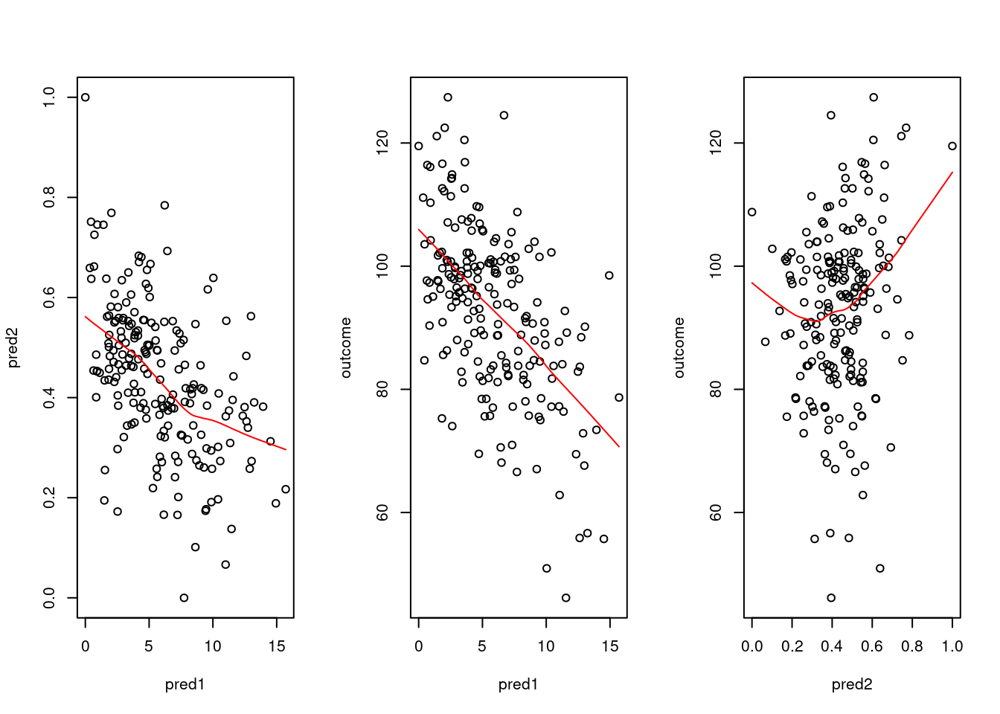
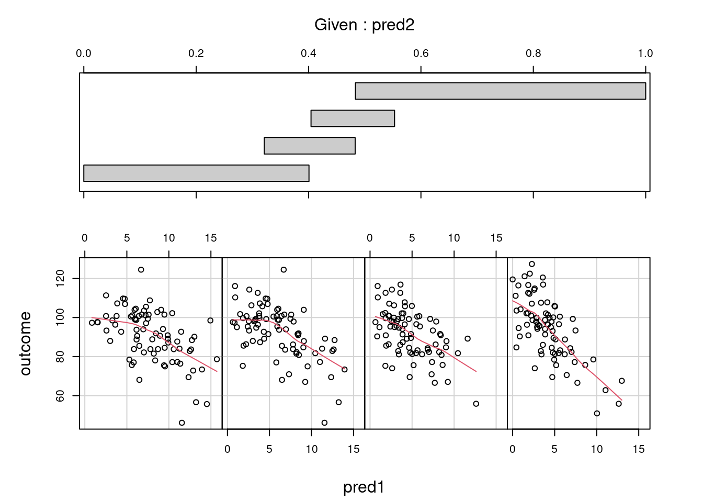
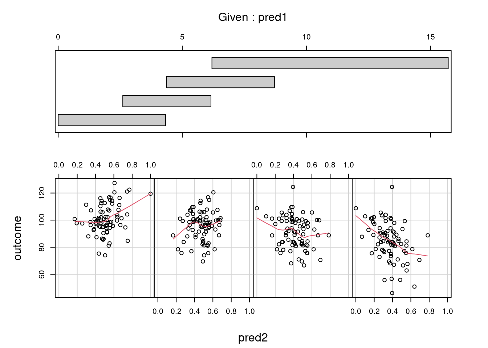
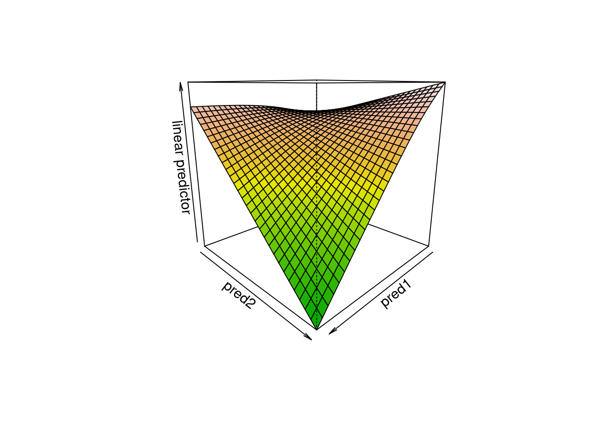
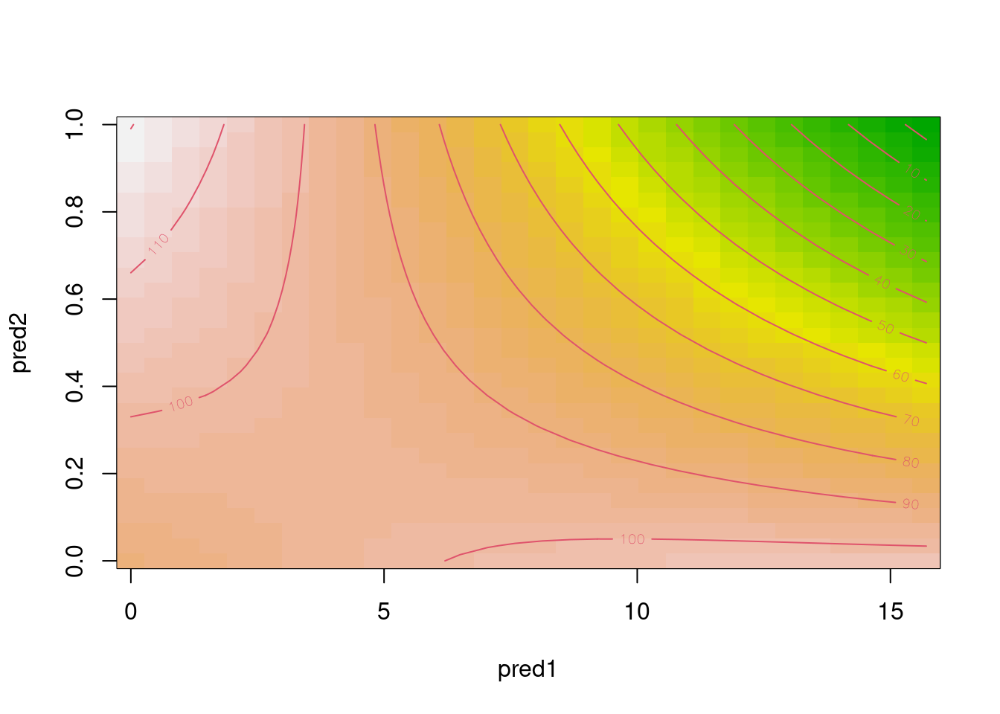
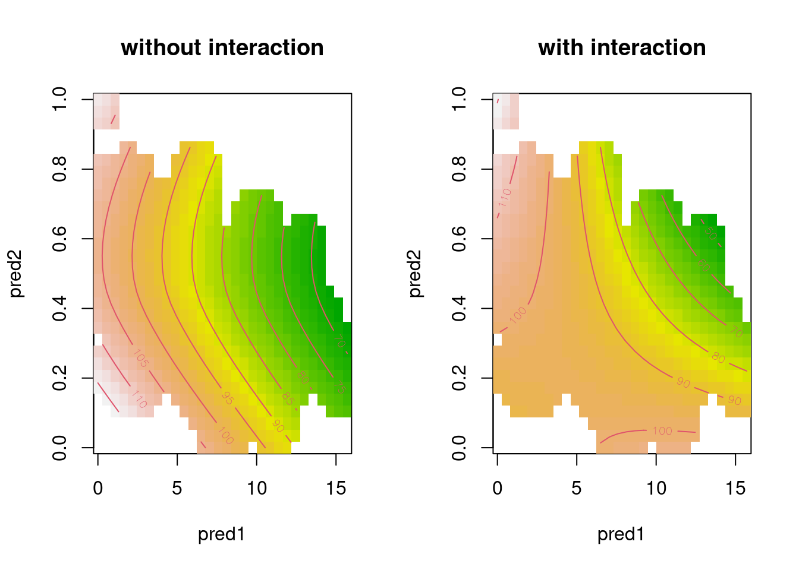

df <- read.csv("http://homeweb.unifr.ch/VanhoveJ/Pub/Data/example_interaction.csv")Fitting interactions between continuous variables
Splitting up continuous variables is generally a bad idea. In terms of statistical efficiency, the popular practice of dichotomising continuous variables at their median is comparable to throwing out a third of the dataset. Moreover, statistical models based on split-up continuous variables are prone to misinterpretation: threshold effects are easily read into the results when, in fact, none exist. Splitting up, or ‘binning’, continuous variables, then, is something to avoid. But what if you’re interested in how the effect of one continuous predictor varies according to the value of another continuous predictor? In other words, what if you’re interested in the interaction between two continuous predictors? Binning one of the predictors seems appealing since it makes the model easier to interpret. However, as I’ll show in this blog post, it’s fairly straightforward to fit and interpret interactions between continuous predictors.
Data
To keep things easy, I will use a simulated dataset with two continuous predictors (pred1 and pred2) and one continuous outcome. The dataset is available here.
Exploratory plots
First, let’s draw some quick graphs to get a sense of how the predictors and the outcome are related.
# 3 plots next to each other
par(mfrow = c(1, 3))
# Intercorrelation pred1/pred2
plot(pred2 ~ pred1, df)
lines(lowess(df$pred1, df$pred2), col = "red")
# Pred1 vs. outcome
plot(outcome ~ pred1, df)
lines(lowess(df$pred1, df$outcome), col = "red")
# Pred2 vs. outcome
plot(outcome ~ pred2, df)
lines(lowess(df$pred2, df$outcome), col = "red")
pred1 is negatively correlated with the outcome. Right: pred2 seems to be nonlinearly correlated with the outcome.# Normal plotting again
par(mfrow = c(1, 1))When we suspect there’s an interaction between two predictors, it’s useful to draw conditioning plots as well. For these plots, the dataset is split up into a number of overlapping equal-sized regions defined by a conditioning variable, and the relationship between the predictor of interest and the outcome within each region is plotted.
# coplot's in the lattice package
library(lattice)
coplot(outcome ~ pred1 | pred2, data = df,
number = 4, rows = 1,
panel = panel.smooth)
pred1 on the outcome in four regions defined by pred2. The negative relationship grows stronger as pred2 increases (from left to right).coplot(outcome ~ pred2 | pred1, data = df,
number = 4, rows = 1,
panel = panel.smooth)
pred2 on the outcome in four regions defined by pred1. The relationship may be positive for small values of pred1, but becomes negative for larger values (from left to right).Fitting the model
I find it easiest to fit the interaction between two continuous variables as a wiggly regression surface. A wiggly regression surface is the generalisation of a wiggly curve, such as the one in Figure 3 in this earlier blog post, into two dimensions. The advantage of fitting a wiggly surface rather than a plane is that we don’t have to assume that the interaction is linear. Rather, the shape of the surface will be estimated from the data. To fit such wiggly surfaces, we need the gam() function in the mgcv package. The wiggly regression surface is fitted by feeding the two predictors to a te() function within the gam() call.
# install.packages("mgcv")
library(mgcv)Loading required package: nlmeThis is mgcv 1.9-0. For overview type 'help("mgcv-package")'.m1 <- gam(outcome ~ te(pred1, pred2), data = df)A numerical summary of the model can be obtained using summary(), but as you can see, this doesn’t offer much in the way of interpretable results.
summary(m1)
Family: gaussian
Link function: identity
Formula:
outcome ~ te(pred1, pred2)
Parametric coefficients:
Estimate Std. Error t value Pr(>|t|)
(Intercept) 92.7686 0.7505 123.6 <2e-16 ***
---
Signif. codes: 0 '***' 0.001 '**' 0.01 '*' 0.05 '.' 0.1 ' ' 1
Approximate significance of smooth terms:
edf Ref.df F p-value
te(pred1,pred2) 4.629 5.406 27.97 <2e-16 ***
---
Signif. codes: 0 '***' 0.001 '**' 0.01 '*' 0.05 '.' 0.1 ' ' 1
R-sq.(adj) = 0.427 Deviance explained = 44.1%
GCV = 115.91 Scale est. = 112.65 n = 200To understand what the wiggly regression surface looks like, you need to plot it. This can be done using the vis.gam() function. The two plots below show the same regression surface: once as a three-dimensional plot and once as a contour plot. The latter can be read like a topographic map of hilly terrain: the contour lines connect points on the surface with the same height, and the closer the contour lines are to each other, the steeper the surface is.
# 3-d graph
vis.gam(m1, plot.type = "persp", color = "terrain",
theta = 135, # changes the perspective
main = "")
# A contour plot
vis.gam(m1, plot.type = "contour", color = "terrain",
main = "")
What can be gleaned from these plots? First of all, the outcome variable is largest for low pred1 and pred2 values. Second, pred1 and pred2 both have strong negative effects when the respective other variable is large, but their effect is quite weak when the other variable is low.
The contour lines are useful to quantify this. Going along the y-axis for a low pred1 value (say, 2.5), we only cross one contour line, and we seem to climb slightly. Going along the y-axis for a large pred1 value (say, 12.5), we cross 8 contour lines and we descend considerably, from around 100 on the outcome variable to below 30. Similarly, going along the x-axis for a low pred2 value (say, 0.2), we descend slightly (perhaps 20 units). Going alongside the x-axis for a large pred2 value (say, 0.8), we cross 10 contour lines. The effect of pred1, then, depends on the value of pred2 and vice versa. Or in other words, pred1 and pred2 interact with each other.
Improved visualisation
I find it useful to plot a contour plot with the wiggly regression surface with the interaction alongside a contour plot with a regression surface without an interaction. I find this helps me to better understand what the interaction consists of. This is particularly helpful when the one or two of the predictors are nonlinearly related to the outcome. To draw the second contour plot, first fit a model without an interaction. By feeding each predictor to a separate te() function, potentially nonlinear regression curves are estimated for both predictors.
m2 <- gam(outcome ~ te(pred1) + te(pred2), data = df)Then plot both contour plots alongside each other. Here I also set the too.far parameter. This way, region of the graph for which no combinations of predictor variables are available are not plotted.
# Two plots next to each other
par(mfrow = c(1, 2))
vis.gam(m2, plot.type = "contour", color = "terrain",
too.far = 0.1, main = "without interaction")
vis.gam(m1, plot.type = "contour", color = "terrain",
too.far = 0.1, main = "with interaction")
par(mfrow = c(1, 1))Decomposing a regression surface into main effects and an interaction
It may be useful to ‘decompose’ the regression surface into the main effects associated with each predictor and the interaction itself. This can be done by fitting the main effects and the interaction in separate ti() (not te()) functions. This fits non-linear main effects, which is what we want: this way, the interaction term doesn’t absorb any nonlinearities not modelled by the linear main effects.
m3 <- gam(outcome ~ ti(pred1) + ti(pred2) + # main effects
ti(pred1, pred2), # interaction
data = df)
summary(m3)
Family: gaussian
Link function: identity
Formula:
outcome ~ ti(pred1) + ti(pred2) + ti(pred1, pred2)
Parametric coefficients:
Estimate Std. Error t value Pr(>|t|)
(Intercept) 90.3697 0.8604 105 <2e-16 ***
---
Signif. codes: 0 '***' 0.001 '**' 0.01 '*' 0.05 '.' 0.1 ' ' 1
Approximate significance of smooth terms:
edf Ref.df F p-value
ti(pred1) 1.684 2.057 51.445 < 2e-16 ***
ti(pred2) 1.000 1.000 6.817 0.00974 **
ti(pred1,pred2) 5.706 7.263 5.105 2.3e-05 ***
---
Signif. codes: 0 '***' 0.001 '**' 0.01 '*' 0.05 '.' 0.1 ' ' 1
R-sq.(adj) = 0.44 Deviance explained = 46.4%
GCV = 115.6 Scale est. = 110.17 n = 200The wiggly regression surface of m1 has here been decomposed into the main effects of pred1 and pred2 and an interaction between them. Both main effects and the interaction are significant.
The edf values in the table above, incidentally, express how nonlinear the effects are estimated to be. Values close to 1 indicate that the effect is linear, whereas a value of 2 suggests that the effect can be modelled using a linear and a quadratic term etc. Here both main effects could sensibly be modelled linearly, but the interaction couldn’t. (A linear interaction means that you multiply both predictors together and use this product as an additional predictor.)
There’s much more to fitting nonlinearities and interactions using gam() than discussed here, but hopefully this was useful enough to dissuade you from carving up continuous variables when you’re interested in their interaction.
Software versions
devtools::session_info()─ Session info ───────────────────────────────────────────────────────────────
setting value
version R version 4.3.1 (2023-06-16)
os Ubuntu 22.04.2 LTS
system x86_64, linux-gnu
ui X11
language en_US
collate en_US.UTF-8
ctype en_US.UTF-8
tz Europe/Zurich
date 2023-08-07
pandoc 3.1.1 @ /usr/lib/rstudio/resources/app/bin/quarto/bin/tools/ (via rmarkdown)
─ Packages ───────────────────────────────────────────────────────────────────
package * version date (UTC) lib source
cachem 1.0.6 2021-08-19 [2] CRAN (R 4.2.0)
callr 3.7.3 2022-11-02 [1] CRAN (R 4.3.1)
cli 3.6.1 2023-03-23 [1] CRAN (R 4.3.0)
crayon 1.5.2 2022-09-29 [1] CRAN (R 4.3.1)
devtools 2.4.5 2022-10-11 [1] CRAN (R 4.3.1)
digest 0.6.29 2021-12-01 [2] CRAN (R 4.2.0)
ellipsis 0.3.2 2021-04-29 [2] CRAN (R 4.2.0)
evaluate 0.15 2022-02-18 [2] CRAN (R 4.2.0)
fastmap 1.1.0 2021-01-25 [2] CRAN (R 4.2.0)
fs 1.5.2 2021-12-08 [2] CRAN (R 4.2.0)
glue 1.6.2 2022-02-24 [2] CRAN (R 4.2.0)
htmltools 0.5.5 2023-03-23 [1] CRAN (R 4.3.0)
htmlwidgets 1.6.2 2023-03-17 [1] CRAN (R 4.3.1)
httpuv 1.6.11 2023-05-11 [1] CRAN (R 4.3.1)
jsonlite 1.8.7 2023-06-29 [1] CRAN (R 4.3.1)
knitr 1.39 2022-04-26 [2] CRAN (R 4.2.0)
later 1.3.1 2023-05-02 [1] CRAN (R 4.3.1)
lattice * 0.21-8 2023-04-05 [4] CRAN (R 4.3.0)
lifecycle 1.0.3 2022-10-07 [1] CRAN (R 4.3.0)
magrittr 2.0.3 2022-03-30 [1] CRAN (R 4.3.0)
Matrix 1.6-0 2023-07-08 [4] CRAN (R 4.3.1)
memoise 2.0.1 2021-11-26 [2] CRAN (R 4.2.0)
mgcv * 1.9-0 2023-07-11 [4] CRAN (R 4.3.1)
mime 0.10 2021-02-13 [2] CRAN (R 4.0.2)
miniUI 0.1.1.1 2018-05-18 [1] CRAN (R 4.3.1)
nlme * 3.1-162 2023-01-31 [4] CRAN (R 4.2.2)
pkgbuild 1.4.2 2023-06-26 [1] CRAN (R 4.3.1)
pkgload 1.3.2.1 2023-07-08 [1] CRAN (R 4.3.1)
prettyunits 1.1.1 2020-01-24 [2] CRAN (R 4.2.0)
processx 3.8.2 2023-06-30 [1] CRAN (R 4.3.1)
profvis 0.3.8 2023-05-02 [1] CRAN (R 4.3.1)
promises 1.2.0.1 2021-02-11 [1] CRAN (R 4.3.1)
ps 1.7.5 2023-04-18 [1] CRAN (R 4.3.1)
purrr 1.0.1 2023-01-10 [1] CRAN (R 4.3.0)
R6 2.5.1 2021-08-19 [2] CRAN (R 4.2.0)
Rcpp 1.0.11 2023-07-06 [1] CRAN (R 4.3.1)
remotes 2.4.2 2021-11-30 [2] CRAN (R 4.2.0)
rlang 1.1.1 2023-04-28 [1] CRAN (R 4.3.0)
rmarkdown 2.21 2023-03-26 [1] CRAN (R 4.3.0)
rstudioapi 0.14 2022-08-22 [1] CRAN (R 4.3.0)
sessioninfo 1.2.2 2021-12-06 [2] CRAN (R 4.2.0)
shiny 1.7.4.1 2023-07-06 [1] CRAN (R 4.3.1)
stringi 1.7.12 2023-01-11 [1] CRAN (R 4.3.1)
stringr 1.5.0 2022-12-02 [1] CRAN (R 4.3.0)
urlchecker 1.0.1 2021-11-30 [1] CRAN (R 4.3.1)
usethis 2.2.2 2023-07-06 [1] CRAN (R 4.3.1)
vctrs 0.6.3 2023-06-14 [1] CRAN (R 4.3.0)
xfun 0.39 2023-04-20 [1] CRAN (R 4.3.0)
xtable 1.8-4 2019-04-21 [1] CRAN (R 4.3.1)
yaml 2.3.5 2022-02-21 [2] CRAN (R 4.2.0)
[1] /home/jan/R/x86_64-pc-linux-gnu-library/4.3
[2] /usr/local/lib/R/site-library
[3] /usr/lib/R/site-library
[4] /usr/lib/R/library
──────────────────────────────────────────────────────────────────────────────